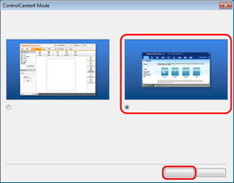

Digitalizar um documento como um ficheiro PDF utilizando o ControlCenter4
| 0. | Se aparecer o ecrã relativo ao Modo do ControlCenter4, seleccione Modo Avançado e, em seguida, clique em OK. |
|---|

| 1. | Clique em Ficheiro. |
|---|

| 2. | Prima Digitalização. O equipamento inicia o processo de digitalização. A pasta onde os dados digitalizados serão guardados é aberta automaticamente. |
|---|

- Seleccione PDF (*.pdf) na lista pendente Tipo de Ficheiro.
- Pode introduzir o nome de ficheiro que pretende atribuir ao documento.
- Pode guardar o ficheiro na pasta predefinida ou seleccionar a pasta que preferir clicando no botão
 (Procurar).
(Procurar). - Pode seleccionar uma resolução de digitalização na lista pendente Resolução.
- Pode seleccionar o tamanho do documento na lista pendente Formato do Documento.